Functional Patterns Brisbane
Real Results
130+ five-star reviews. Measurable outcomes. Lives changed.
Functional Patterns Brisbane
130+ five-star reviews. Measurable outcomes. Lives changed.
Documented Transformations
Real clients. Real structural change. Every image is an unedited before-and-after taken during training at our Brisbane facility.
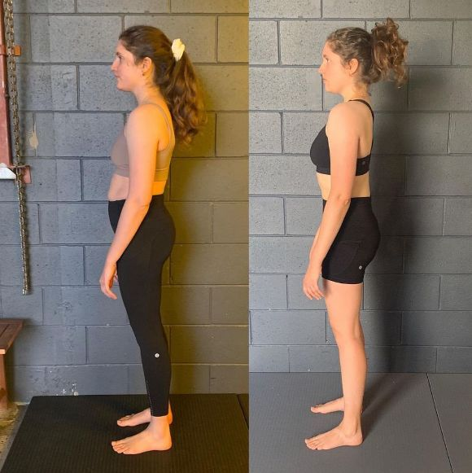
Poor posture and constant back and knee pain transformed into enhanced posture and significantly improved quality of life.
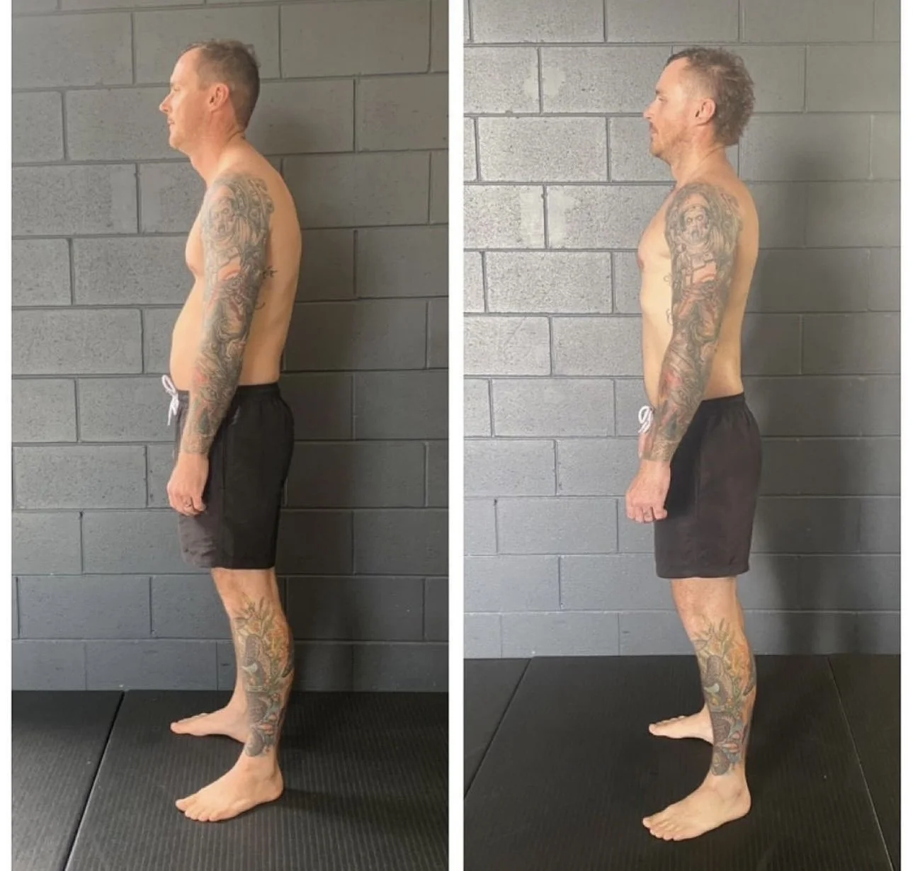
Kyphosis, lordosis, and chronic pain from head to toe. Now completely pain-free with reduced body fat and improved structure.
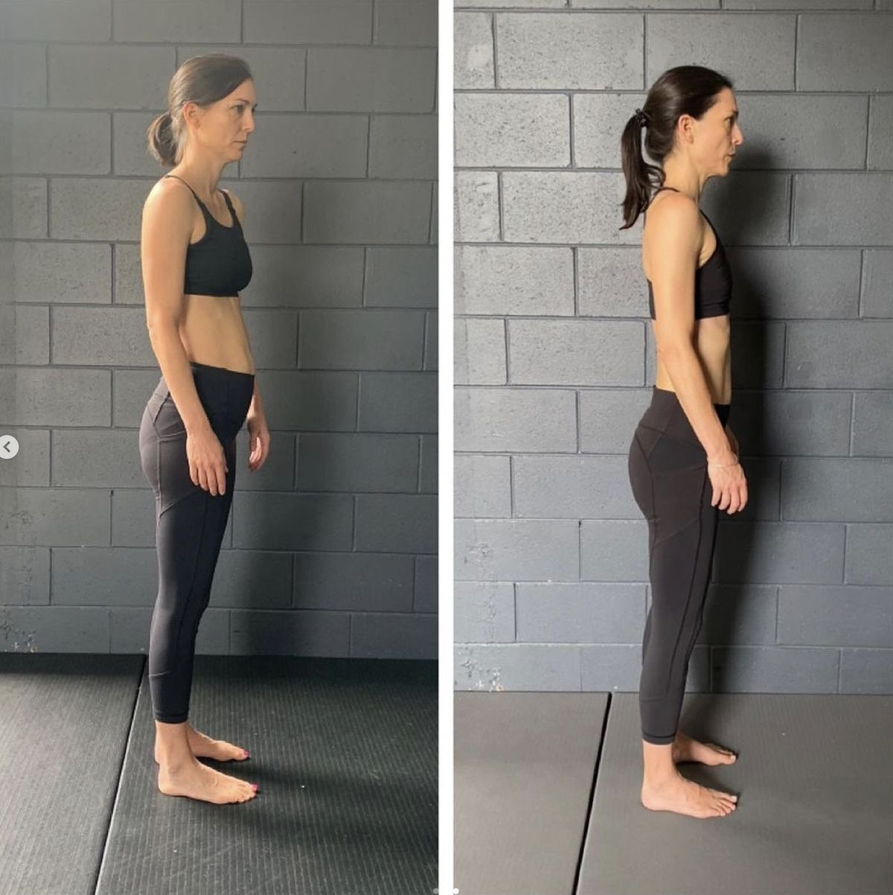
13 months of training. Pain went from 8/10 to 0/10. Can now sleep on her side and is significantly stronger.
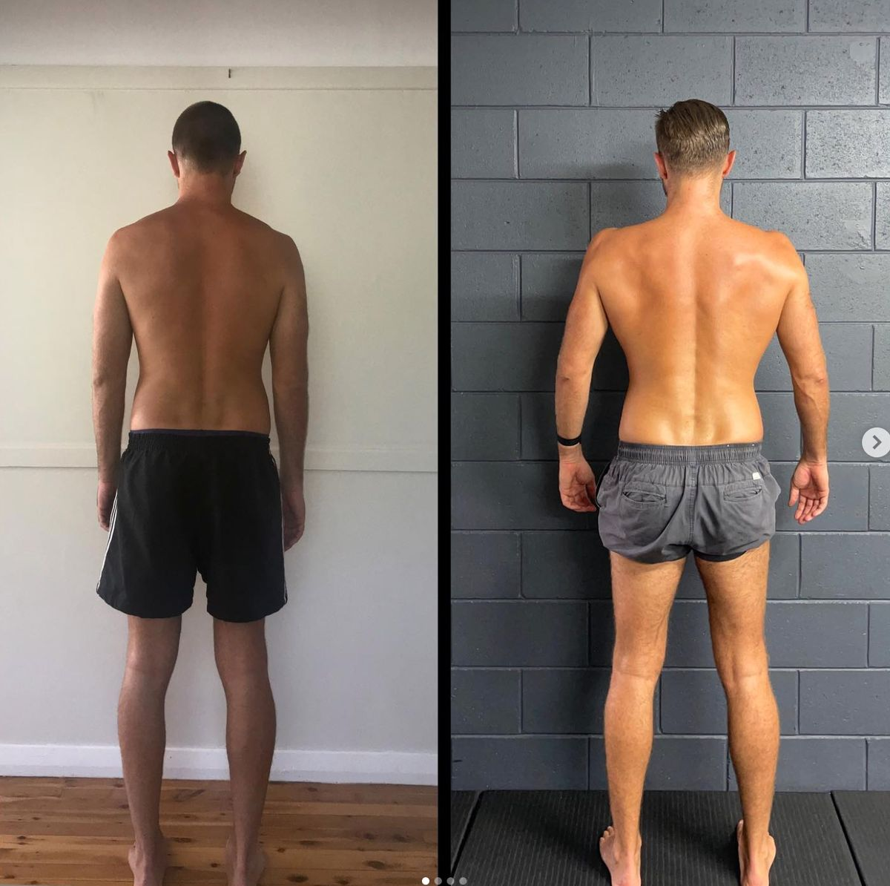
Adrenal fatigue, shoulder tears, and SI joint dysfunction. Gained 6kg of muscle with complete pain elimination.
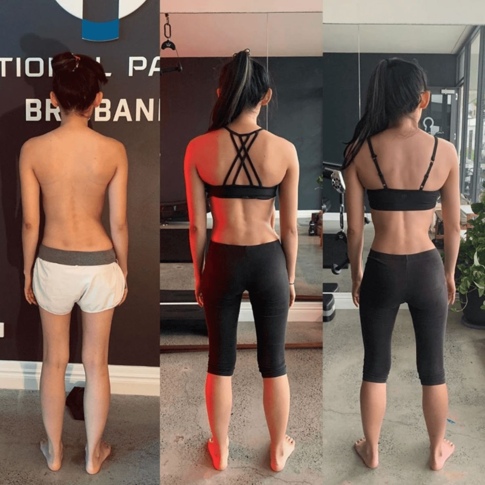
5 months of training produced measurable curve improvement, better balance, and enhanced cognitive function.
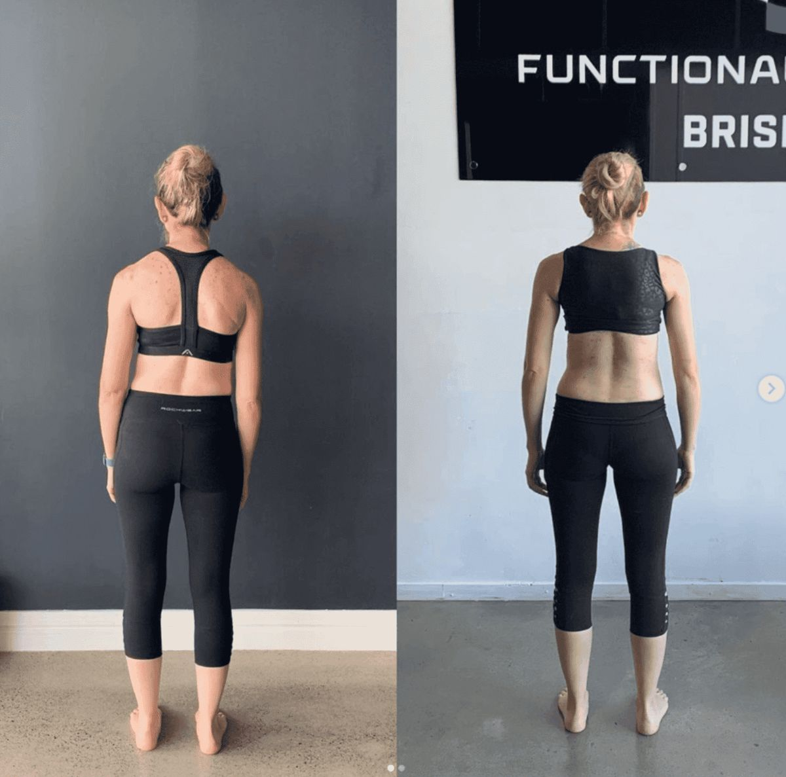
6 months. Original 50° curve fused to 7°, then developed a new 40° curve that is now improving — without further surgery.
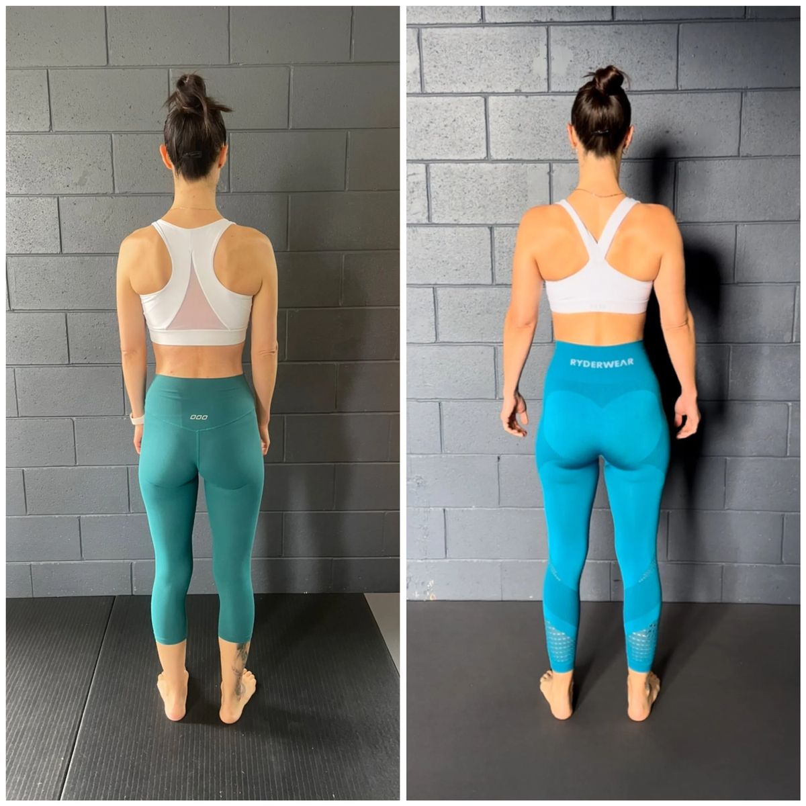
1.5 years of training. Neck pain 8→3, shoulder pain 8→1, lower back pain 3→1.
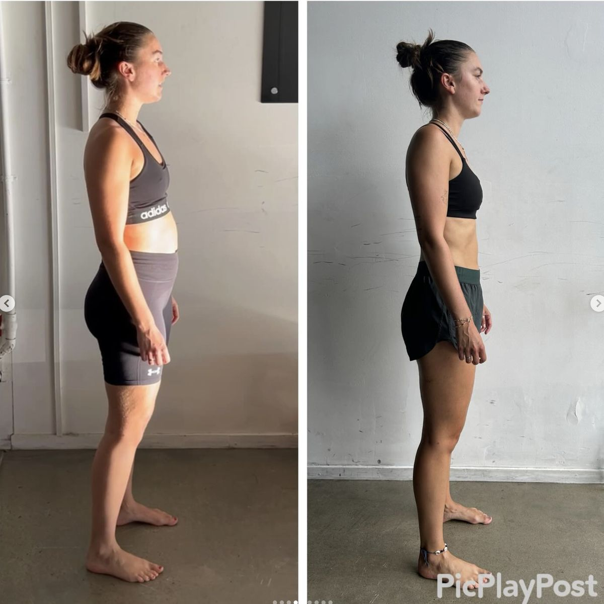
Neck pain 8→2, shoulder pain 8→3, lower back pain 6→2. Significant reduction across all areas.
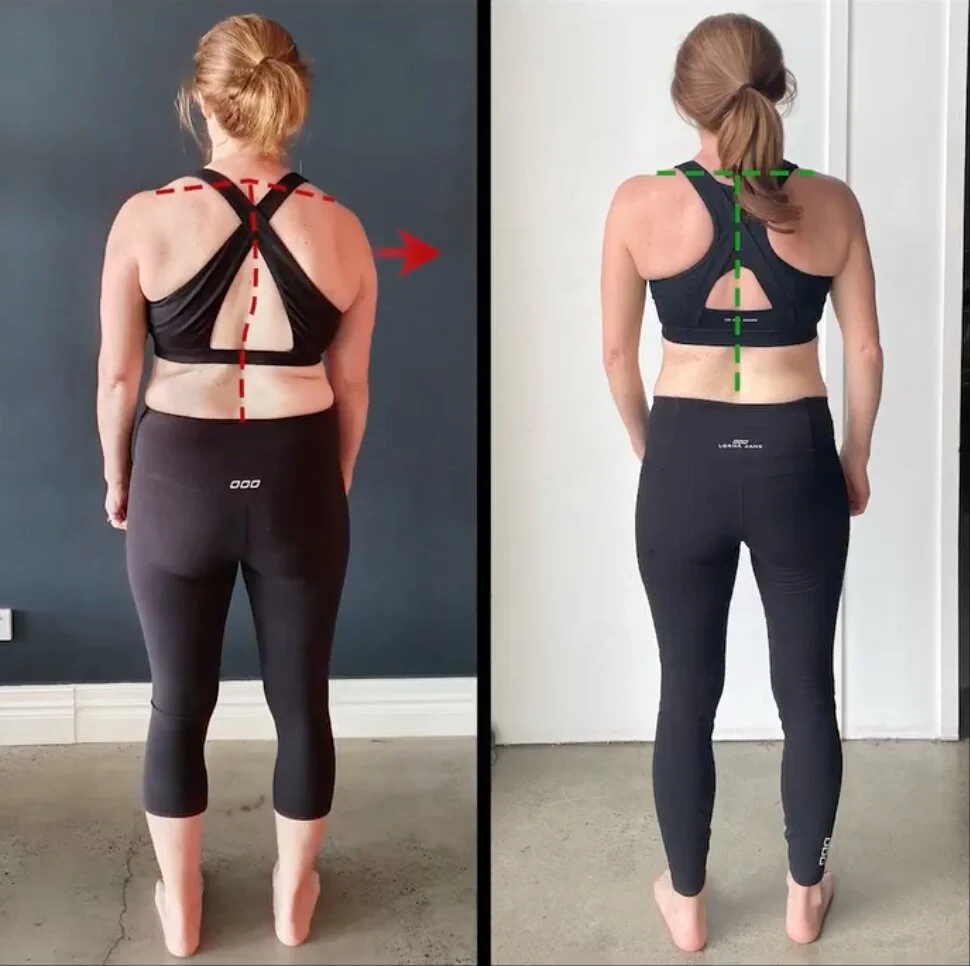
Severe back pain and sciatica resolved. Now pain-free with a decompressed lumbar spine.
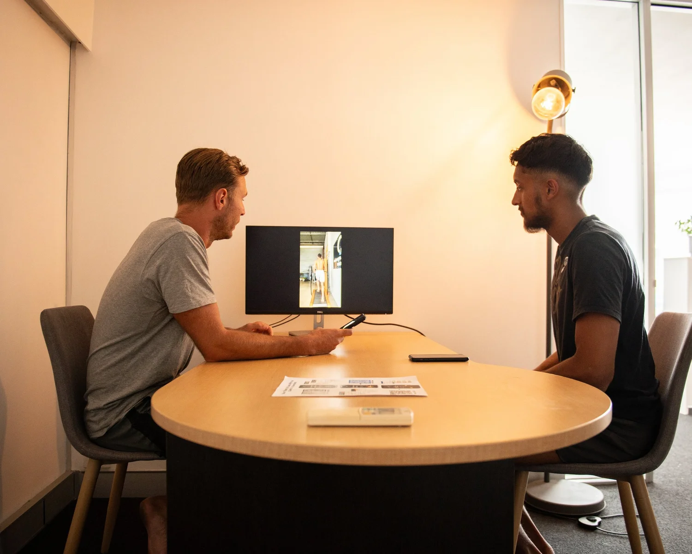
Lower back and hip pain following surgery. Now pain-free with full daily function restored.
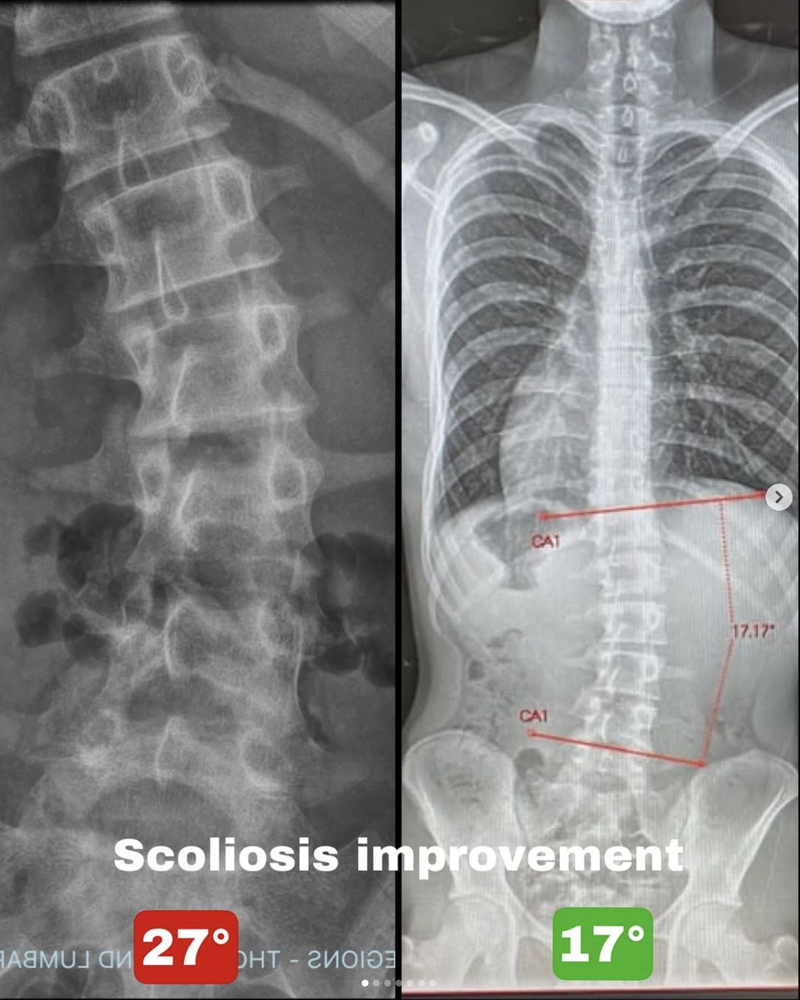
10 months of training. Cobb angle reduced from 27° to 17°. Pain dropped from 7/10 to 0/10. Full return to competitive boxing.
Athlete Performance
Better biomechanics means faster, stronger, and more resilient athletes. Here are the numbers.
Professional Cricketer
Professional Cricketer
Amateur Soccer
Cricketer
Cricket
Measurable Change
Pain measured on a 0–10 scale before and after Functional Patterns training. These are real, client-reported outcomes.
Hip replacement recommended by specialist — avoided entirely through biomechanics training.
Significant pain reduction in a complex case involving multiple sclerosis and hip osteoarthritis.
What Our Clients Say
"After being recommended lower back surgery...I can sprint at top speed again; jump, throw, lift and carry. I am no longer victim to constant pain."
Lachlan B
Verified Google Review
"I had a hip injury 6 years ago...After exhausting all treatment options I was told surgery was my only choice. Having worked with FP Brisbane has changed my pain and mobility — without surgery!"
Nic
Verified Google Review
"After 15+ years of relentless pain and dysfunction I am close to completely pain free, in an impressive timeframe."
Kate A
Verified Google Review
"In my time training with Max I haven't been back to the Chiropractor once."
Clare
Verified Google Review
"If I had my time again, I would have went to Functional Patterns instead as I'm convinced I could have avoided the surgery all together."
Matt Turkington
Verified Google Review
"I had been unable to successfully make further improvements through other allied health supports and Pilates...Only on occasion I feel pain...Everything is moving better. Unexpected benefits: improved posture, increased energy, better stress resilience, sleeping better."
Charma
Verified Google Review
Evidence-Based
Our approach is supported by 9 research summaries written by Louis Ellery, covering the biomechanics principles behind our results.
Your Turn
90 minutes to understand exactly why your pain exists, which patterns drive it, and what needs to change.